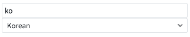
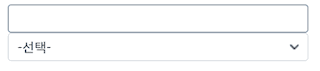
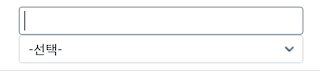

AutoComplete의 selectedData 속성에 대한 예제입니다. selectedData 속성은 AutoComplete이 dataCollection과 연동돼있을 때 저장되어 있는 값이 AutoComplete의 아이템 중 해당하는 것이 없을 때 dataColloction의 값이 유지되도록 하는 설정입니다. true(기본 값): 선택 항목에 존재하지 않는 경우 연동된 dataCollection의 값을 유지하지 않습니다. false : 선택 항목에 존재하지 않더라도 연동된 dataCollection의 값을 유지합니다.
selectedData를 true로 설정하고 연동된 dataCollection의 값의 변화를 확인한다.
selectedData를 false로 설정하고 연동된 dataCollection의 값의 변화를 확인한다.
STEP 1. 공통 사항
InputBox에 "참고"영역에 있는 AutoComplete 선택 항목에 있는 value값을 입력하면 AutoComplete도 해당하는 값으로 변경됩니다.
그림 1.브라우저(Chrome) 실행 예시

STEP 2. selectedData: true 영역
InputBox에 AutoComplete의 value같이 아닌 데이터를 입력한 후 엔터키 혹은 탭 키를 눌러 입력을 완료합니다. 이 때 데이터가 유지 되지 않고 사라지는 것을 확인합니다.
그림 2.브라우저(Chrome) 실행 예시

STEP 3. selectedData : false 영역
InputBox에 AutoComplete의 value 값이 아닌 데이터를 입력 후 엔터 키 혹은 탭 키를 눌러 입력을 완료합니다. 이 때 true일 때와 달리 값이 유지되는 것을 확인합니다.
그림 3.브라우저(Chrome) 실행 예시

컴포넌트의 속성 selectedData를 필요에 맞게 설정합니다.
[함수] selectedData : dataCollection과 연동 된 값이 없는 경우 입력 데이터를 유지할지 결정합니다.
스크립트
<w2:autoComplete ... selectedData="false" ...>
<!-- 중략 -->
</w2:autoComplete>selectedData